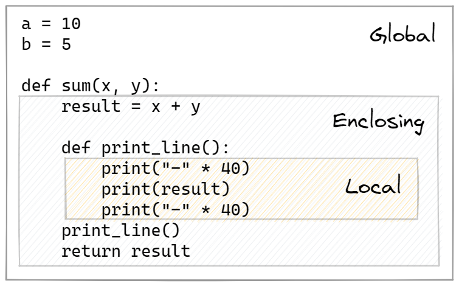
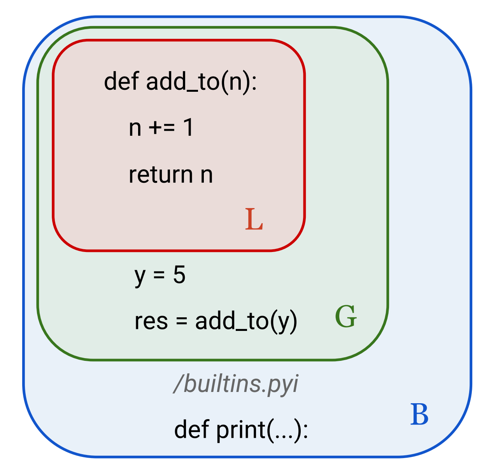
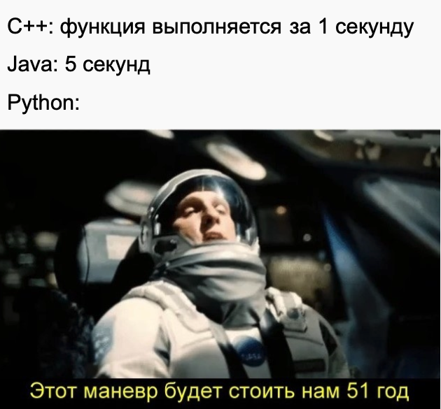

Импорт из модулей и пакетов
Модули и пакеты
Создание модуля
Модуль - это отдельный файл, определения и выражения внутри которого можно использовать в других файлах.
Разберем импорт имен на примере модуля mathematics.py, который можно скачать по ссылке. Далее, добавьте скачанный модуль в ваш проект.
Обратите внимание, что в следующих разделах модулем будет называться файл с расширением .py.
Часть содержимого модуля mathematics.py можно также посмотреть в блоке кода ниже.
######## MODULE: mathematics ########
## Mathematics contains functions with mathematical operations are used to perform various mathematical operations,
## such as finding the roots of an equation, exponentiation, multiplication and division.
## about Sphinx documentation – https://sphinx-rtd-tutorial.readthedocs.io/en/latest/docstrings.html
def square_root(val: int) -> float:
"""
The function returns the square root of the number.
:param val: a number from an integer set
:type val: int
:return: squre root of val
:rtype: float
"""
return val ** .5
# и тд
Подробнее об используемом оформлении функций вы можете посмотреть в теме Функции. Свойства и параметры функций
В проекте сейчас имеется два модуля:
- main.py
- mathematics.py
Способы импорта из модуля
Самым простым способом для того, чтобы получить доступ к выражениям другого модуля (файла), является вызов оператора import.
В файле main.py
Первым способом является импорт имени модуля. Для доступа к именам функций необходимо сначала указать имя модуля, затем, после точки, указать имя функции для импорта в текущий файл. Именем модуля является имя файла без добавления суффикса .py.
Импорт с синонимом
Возможно вы заметили, что при вызове имени, перед ним необходимо указывать модуль, откуда это имя пришло. Написание названия mathematics занимает значительное место. Поэтому для модуля можно определить новое короткое имя, с помощью которого можно вызывать имени модуля. Обратите внимание, что синоним заменяет название модуля.
Прямой импорт
Для того, чтобы полностью включить имя в текущий файл, можно включить его полностью. Такой способ импорта может быть полезен, если мы четко знаем какие функции нам могут понадобится. Будьте осторожны! Можно случайно перекрыть другое имя.
Примеры из практики
Импорт всех имен
Импортировать все имена из модуля в пространство имен текущего модуля. Редко используется из-за пересечения пространств имен. Так как нам неизвестно, какие имена могут быть внутри модуля, присутствует риск заменить используемое имя переменной. В данном примере, функция pow заменила встроенную функцию pow
Создание пакета
Пакет — это набор модулей в каталоге, который содержит файл инициализации __init__.py
Пакет позволяет структурировать имена в большом количестве модулей. Примером пакета служит проект, генерируемый scrapy. Это мощный фреймворк для сбора данных из веб-ресурсов, о котором подробнее вы можете почитать по ссылке.Разберем импорт имен на упрощенном примере пакета web_parser, который можно скачать в виде архива по ссылке.
Предоставленный пакет содержит:
- Модули
- Подпакеты
- Файл __init__.py
- Папки __pycache__
Имена хранятся в модулях или в файле __init__.py
Способы импорта из пакета
Импорт имен из пакетов будет аналогичен импорту из модулей.
Прямой импорт из пакета
Перейдите в файл app.py. Теперь запишем импорт имен из пакета web_parser. Для импорта необходимо указать пакет, в котором находится модуль, из которого импортируется имя. К сожалению, запись вызова будет довольно объемной.
Импорт с синонимом
Так как написание названия пакета и модуля занимает значительное место. Поэтому, также как и для модуля, для пакета можно определить новое короткое имя, с помощью которого можно вызывать имени модуля. Заметьте, что синоним заменяет название пакета.
Импорт из __init__.py
Зачастую, файл __init__.py пуст. Однако, если в нем разместить импорты или какие-либо имена, то вызвать их можно просто сославшись на пакет. Например, если импортировать подпакет web_parser.spiders, то будет доступно имя spider, даже если мы не ссылаемся на модуль web_parser.
Точка перед именем пакета
В том случае, если необходимо произвести импорт из текущего каталога, то необходимо указать откуда начинать поиск по каталогам. С помощью символа «.» можно указать, что поиск модуля нужно производить с текущей позиции. Если модуль находится на уровень выше, то можно указать символы «..»
Структура модуля
Для того, чтобы модуль функционировал корректно, необходимо соблюдать ряд рекомендация при его формировании.
- Импорты (import os)
- Константы (PATH='C:\Users\’)
- Функции (def func(par):)
- Классы (class Person:) – тема ООП
- Тело цикла-условия
###### Структура модуля
#### 1. Подключить модули
from mathematics import multiply
#### 2. Константы
PI = 3.1415926
#### 3. Создание функций
## Длина окружности
def Circumference(r):
return 2*PI*r
## Площадь окружности
def AreaCircle(r):
return PI*r*r
## Объем шара
def VolumeSphere(r):
return 4.0/3.0*PI*r*r*r
#### 4. Вычисления/запуск/тело цикла-условия
if __name__ == '__main__':
## Вычислить длину окружности
Length = Circumference(6)
print("Length = ", Length)
## Вычислить площадь окружности
Area = AreaCircle(6)
print("Area = ", Area)
Для чего нужно условие if __name__ == '__main__'?
Ранее было использовано условие с необычным именем __name__. Каждый модуль, как и любой другой объект в python имеет свое имя. Если импортировать модуль mathematics и вызвать его имя __name__, то получим название файла. Однако, при вызове имени запускаемого модуля app, получаем __main__. Значит, если модуль называется __main__, то он является исполняемым.
Проверим
Подобный принцип формирования скрипта можно увидеть в проектах довольно часто. С помощью конструкции if __name__ == ‘__main__’ определяют файл, который является стартом для всего проекта. Например, таким образом можно запускать веб приложение или ботов.
Пространство имен
Уровни пространства имен
Пространство имен — это совокупность имен с информацией об объекте, которые разделены по уровням. Python формирует имена в словарь, в котором ключи — это имена, а значения — сами объекты. Для организации имен в пространствах используется namespace — структура, используемая для организации имен объектов в Python.

Уровни пространств имен
При работе с модулем выделяют несколько пространств (scopes), имена в которых не пересекаются:
* local — локальные имена существуют внутри функции.
* global — глобальные имена модуля существуют на уровне файла.
* __builtins__ — набор встроенных имен доступны в любое время, когда запущен Python.

Порядок проверки scope-ов
Существование нескольких scope-ов означает, что несколько разных экземпляров определенного имени могут существовать одновременно.
- Сначала Python ищет в локальной области видимости
L. - Eсли нет результатов, то интерпретатор затем просматривает глобальную область видимости
G. - Если Python не может найти переменную нигде больше, то поиск идет по встроенной области видимости
B.
Поиск переменной var
Согласно проверке переменная var находится в трех областях Можно осуществить последовательный вывод на экран. Переменной no_name нет ни в одной из областей.
var = 'глобальная'
def func():
var = 'вложенная'
print('var в func =', var)
def _inside():
var = 'локальная'
print('var в _inside =', var)
_inside()
func()
print('var =', var)
# print(no_name)
Словари пространств имен
Имена в scope-ах хранятся в виде словарей. Например при вызове функции globals() можно получить текущий словарь глобального пространства имен. Аналогично, locals(). Объявление оператора global позволяет функции получать доступ к объекту в глобальной области видимости. Имена, указанные после оператора nonlocal, ссылаются на переменные в предыдущей области.
fvar = 'из модуля'
def func():
global fvar # станет глобальной
fvar = 'из функции'
svar = 'из функции'
def _inside():
nonlocal svar # заменит внешнее имя
svar = 'из функции-оболочки'
_inside()
print('svar =', svar)
func()
print('fvar =', fvar)
Про скорость Python

Рассмотрим процесс запуска модулей
graph LR
A[Исходный код <br> file.py] --> B[Байт-код <br> file.cpython-310.pyc]
B --> C[Выполнение на <br>PVM]- Интерпретатор – программа, которая последовательно выполняет инструкции в файле.
- Компилятор – программа, которая переводит написанные команды в байт-код
- Байт-код – это низкоуровневое представление исходного кода программы вне зависимости от платформы. Инструкции в байт-коде выполняются значительно быстрее.
- Python virtual machine – часть пакета при установке Python, которая исполняет байт-код после компиляции из исходного кода
Почему считают, что Python медленный?
- Байт-код не является двоичным, следовательно, в отличии от C, не может выполняться напрямую процессором.
- Для ускорения запуска программы интерпретатор предкомпилирует модули.
- Для этого создается каталог
__pycache__, в котором хранится бинарный код python с расширением.pyc. - Если в модуль внести изменения, то фиксируется время, когда он был изменен. При несоответствии исходного и нового времени изменения (версии) pyc-файл перекомпилируется.
Что такое "disassambler"?
Модуль dis позволяет использовать одноименную функцию для того, чтобы конвертировать функцию в код ассемблера, то есть разобрать код на этапы выполнения. Ассемблер — это язык программирования, который позволяет писать программы на низком уровне, то есть он оперирует инструкциями, которые процессор выполняет непосредственно. Низкоуровневые языки могут использоваться для оптимизации программ и повышения их производительности.
Промежуточные итоги
- Модули – это файлы, представленные в Python как объекты. У них также есть свои свойства.
- Для организации пространства скриптов, имена можно организовывать в отдельные модули и импортировать их из них.
- Из модулей формируются пакеты, которые можно инициализировать для удобства импорта.
- Имена могут пересекаться в зависимости от того пространства, в котором они находятся.
- Функции можно «разбирать» на составные части – дисассемблировать.